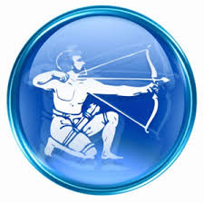

СТРИЛЕЦ 2022

С начала года одинокие Стрельцы могут обрести интересное знакомство с противоположным полом, что серьезно их увлечет. Стоит помнить, что чувства могут активно вспыхнуть и быстро потухнуть. Поэтому следует присмотреться к партнеру перед серьезными шагами на личном фронте.
К здоровью в 2022 году знаку зодиака нужно отнестись серьезно. Особенно тем, кто работает без отдыха. Гороскоп советует Стрельцам с хроническими болезнями не затягивать с лечением.
Карьерный и денежный успех в 2022 году может быть неоднозначным. Если Стрельцы правильно оценят обстановку и сделают соответствующие выводы, то смогут обернуть ситуацию в свою сторону. Гороскоп не советует рисковать, не обдумав тщательно ситуацию. Стоит следить за конкурентами, чтобы те не опередили. Однако в решениях не спешить.